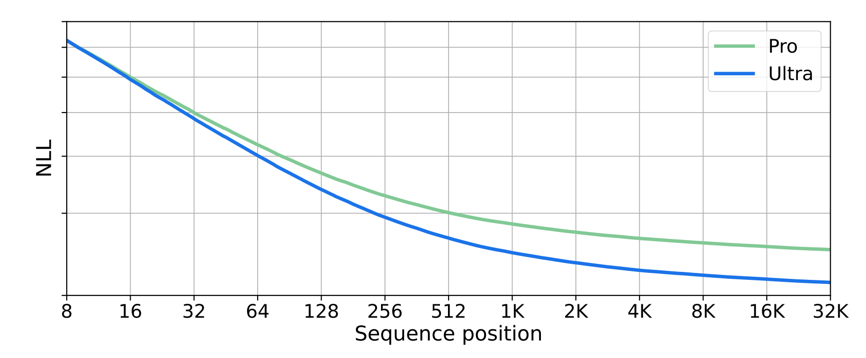

Compute-Optimal Context Size
The objective of language modeling is to predict each token in a sequence. Each prediction is conditional on a subset of previous tokens, which are called the context for the prediction. Intuitively, expanding the context should make prediction task strictly easier. If an extra token provides relevant information, the model can learn to use it; otherwise, the model can simply ignore it. Therefore, given any well-trained language model, we expect the average loss to be lower on longer-context predictions. To verify this, we trained a 772-million-parameter transformer1 with context size 32 kibitokens (KiT).
We refer to token counts using binary prefixes. For example, kibitokens (KiT) are units of 1,024 tokens. 32 KiT = 32 * 1,024 tokens = 32,768 tokens.
We refer to this as a contextwise loss curve, and the general phenomenon of the loss improving on longer contexts as inference-time context scaling. This trend is not specific to our training setup, and has been observed elsewhere in the literature. For example, below is a plot from Gemini [1], illustrating the same effect.

Inference-time context scaling provides a quantitative justification for increasing the training context. Intuitively, training on longer contexts increases the extent to which we can leverage inference-time context scaling, ultimately decreasing loss. This motivates an approach to selecting the size of the training context: choose the context size that optimizes loss given training budget.2 This is a natural complement to existing research on scaling laws. For example, Kaplan et al [2] and Hoffmann et al [3] investigated the optimal way to scale the model size & amount of tokens seen, but both works held context length fixed. To complete this analysis, one must optimize over context length as well.
In Section 3, we will do exactly this, using GPT-2-style transformers at scales ranging from 124 million to 1.6 billion parameters. The results show that the optimal training-context length increases with larger training budgets. But devising a proper experimental setting to compare between train-context lengths is surprisingly tricky. It turns out that popular datasets (such as openwebtext or C4) and standard metrics (average train loss) are inappropriate. We begin by discussing these two subtle but important details: in Section 1, we address the choice of dataset, and in Section 2, we address the choice of evaluation metric.
We conclude with Section 4, a discussion of some applications that are unlocked by models with ultra-long contexts, from kilotokens up to petatokens. But the vast potential of models with ultra-long contexts cannot be realized if they are trained in a setting that is far from compute-optimal. And so, we need research focused on increasing the optimal training-context size. We believe that careful evaluation of context scaling will be an essential ingredient in progress, and hope that the dataset, ideas, and evaluations presented in this article will prove useful towards that objective.
1. Data with Long-term Structure
Below is a contextwise loss curve similar to the ones in the introduction. It shows the average loss at every context length for a 1.6-billion-parameter model trained using 8 KiT of context on openwebtext. In the first part of the curve, this plot shows contextwise scaling, with performance improving as more tokens are seen. But the trend of improvement tapers off. After around 2 KiT, additional tokens no longer improve the loss.
To understand the reason for this, one only need look at the document-length distribution of the openwebtext dataset.
Over 90% of the documents are less than 2 KiT long. In order to train train 8-KiT-context models on this dataset, somehow longer documents must be constructed out of smaller ones (in our experiments, we simply concatenated multiple documents). But the resulting “long” documents do not truly contain any long-term structure, and so there is no benefit to seeing additional tokens at inference-time.
This problem is not restricted to openwebtext. Many other popular datasets, such as C4 and RedPajama, have similar document-length distributions. This is insufficient for our goals, because it does not allow one to thoroughly evaluate contextwise scaling properties.
To solve this issue, we created LongCrawl64, a large natural langauge dataset composed entirely of documents of length 64 KiT. This data is a subset of Common Crawl, tokenized using OpenAI’s TikToken and with short documents filtered out. The end result is a 6661465 x 65336 Zarr array of uint16s, representing 6,661,465 documents each of size 64 KiT. The total token count is 435 billion, two orders of magnitude larger than openwebtext (6 billion). Read our release for the details around the construction and usage of the dataset; for example, how to efficiently load documents when training at context lengths shorter than 64 KiT.
Armed with this new dataset, we can repeat our experiment and again compute the contextwise loss curve of a 1.6-billion-parameter transformer with context size 8 KiT:
On LongCrawl64, we see consistent contextwise scaling throughout the train context. With this first issue resolved, let’s move on to the second.
2. The Training Loss is Misleading
Below, we show the contextwise loss curves for two trained transformers. The average training loss of each model is given by a dotted line. The details of training are not relevant for this section3, so we will simply call them Model A and Model B. But an important difference between the two is that Model A is trained with 4 KiT of context, and Model B with 16 KiT.
Model B has better training loss (2.244) than Model A (2.253). But do we truly prefer Model B? Note that Model A makes better predictions than Model B at every context length where they can be compared. Furthermore, Model A with a 4 KiT context reaches a lower loss than the 16 KiT model ever does. This means that at inference time, if we had 16 KiT of context available, we would be better off throwing away the first 12 KiT of context and feeding the remainder to Model A, instead of feeding all 16 KiT to Model B. Doing so would result in better predictions. In fact, there is no situation where we prefer Model B.
Why does the training loss mislead us? The training loss can be computed as the average of the contextwise loss curve, where the x-axis ranges from 1 to the training-context size. For a 16 KiT model, a much larger component of the training loss comes from situations where the model has a large amount of information in its context. For example, if we look at the proportion of the training loss coming from predictions with at least 3 KiT of context, we see that for Model A this is only 25%, whereas for Model B it is over 80%.
The upshot is: when comparing models trained with different context sizes, the training loss inaccurately ranks their performance. In order to select the optimal training-context size, we must find a more reliable metric to optimize.
Intuitively, we want our metric to reflect the model’s ability to predict the next token at inference time. If we make the assumption that the users of the model have access to arbitrarily many tokens to put in the context, then a natural metric would be the lowest loss that the model attains at any context size. We refer to this as the best-context loss. To measure the best-context loss, compute the contextwise loss curve, and take its minimum.
Consider, for example, the common practice of “prompting” a chatbot: pre-placing tokens into the context ahead of the user’s query. Conventional wisdom holds that longer and more thorough prompts improve final performance. If a maximum-length prompt is always utilized, our assumption is fulfilled, and best-context loss drives performance.
In fact, since the transformer we’ve been working with uses rotary embeddings, we can evaluate it beyond its training context. And, with the LongCrawl64 dataset, we have data with long-term structure up to 64 KiT. Thus, we can extend the contextwise scaling plots up to 64 KiT:
Beyond the context size used during training, there is a rapid deterioration of prediction ability. Clearly, this model does not generalize well to the beyond-train-context regime. We’ve observed this exact same phenomenon for transformers of all sizes trained on all sorts of context sizes.
Even though there have many claims that language models can generalize beyond their training context [4]–[6], to the best of our knowledge, nobody has shown a model for which the loss on natural-language text monotonically decreases with the context size. We consider this to be the true criterion for “sequence length generalization”.
This empirical fact is unfortunate, but has a silver lining: it simplifies measurement of the best-context loss. For models that do not generalize beyond their training context, we can measure the best-context loss by simply reporting the loss at the largest context size seen during training.4 This is the approach that we take in this article. But note that it is merely a convenient heuristic, and is valid only when working with models that fail to generalize in this way.
3. Context Scaling Experiments
With our experimental setting established, it is time to evaluate scaling trends for the train-context size of transformers. The basic experiment we conducted is: train GPT-2 + rotary embeddings + flash attention, for a variety of parameter counts (124 million, 354 million, 772 million, 1.6 billion) and a variety of train-context sizes (128 tokens, 256 tokens, 512 tokens, …, 64 KiT). Each training run used 8 H100 GPUs with data parallel, and ran for 160 GPU-hours. We kept the batch size (i.e. number of tokens per gradient step) constant, so that, as the context size ranged from 128 to 64KiT, the number of documents per update varied from 2048 to 8.
The results of this experiment are visualized in the plot below. The x-axis of is the context size used during training. The y-axis is the best-context loss. Every line corresponds to a different model size. The training resources (in terms of GPU hours) can be interactively controlled via the slider. The colored circles show the optimal train context at each model size, and the dashed line shows the overall optimum.
You can see that varying the context size tends draw a U-shaped curve at all resource levels. Picking too small or too large a context size results in severely degraded performance. By playing with the slider you can adjust amount of training resources and confirm that this trend holds generally.
It is clear from this data that for any model size we should grow the context size with the training resources. We can directly visualize this trend with a second plot. For each model size, we plot a line with the hours of training on the x-axis, and the optimal context size on the y-axis.5
Clearly, as more resources become available we should train our models using longer context sizes. Also, an interesting observation is that the optimal context size grows more slowly for larger models.
So far, we’ve just been looking at the optimal context size for a given model scale. What if we select for the optimal combination of model size and context size?
Ideally, we would quantify these trends and propose scaling laws. This would merely require extending our methodology by a few additional orders of magnitude of model scale, and to sweep over a few other hyperparamters (e.g. learning rate). This is beyond our current capacity, and we cannot meaningfully extrapolate from existing experiments, so we leave quantitative context-size scaling laws to future work.
As we expected, we see that as resources grow one wants to increase both model size and train-context size. But, relative to the previous plot (where we held model size fixed), the growth of the optimal context size noticeably slows down. This seems to be a consequence of the fact that, with a larger GPU hour budget, we want to use larger model sizes, and the optimal context size for those larger models tends to grow slower.
4. Final Thoughts On Context Scaling
At Manifest AI, we believe that context size is one of the most important bottlenecks the field of AI is facing. Many of the most important applications of the technology are just waiting to be unlocked once sufficiently-long-context models become available. Most likely, we will be surprised by which applications end up being most important, but here are some guesses as to what type of use cases will become possible at every context-size scale:
- kilotoken scale: Read & write emails. Hold a short chatbot-style conversation. Customize behavior with a prompt. Few-shot learning with a small number of examples.
- megatoken scale: Write books. Review news articles. Read & edit code. Answer questions from a large scientific literature. Navigate web interfaces.
- gigatoken scale: Read everything tweeted in a day and summarize global opinion. Execute a full software engineering workflow. In-context learning of entire datasets (replacing fine-tuning). Solve complex mathematical problems by iteratively improving over many proof attempts.
- teratoken scale: Manipulate all the data created by a corporation (contracts, documents, emails, etc).
- petatoken scale: Coordinate the affairs of an entire society by integrating all information it produces.
In light of this astonishing potential, it is tempting to simply always train on the longest context that is computationally feasible. But, as our experiments indicate, naively increasing the train context merely leads to models which are massively under-performant – able to ingest long contexts but unable to use their contents to make good predictions. The goal is not merely to train on long contexts, but to efficiently train on long contexts, by finding a setting where long contexts are compute-optimal. This is what it will take to truly leverage vast context sizes.
Such a setting will likely require radical algorithmic and architectural changes. An example of research that has successfully pushed the context size frontier is flash attention [7]. The reason is that it can decrease the cost of training with long contexts. That is also why we are excited about linear transformers, which reduce the cost of training on a context of length \(t\) from \(O(t^2)\) to \(O(t)\). Another angle that seems important is to develop models that generalize beyond the training context, in the specific sense that the contextwise loss curve keeps improving beyond the context size used for training.
We hope that the mindset, methodology, and dataset introduced in this article will be helpful in progressing to the petatoken scale and beyond.
Acknowledgments
We would like to thank Jono Ridgway for helping to prepare the release; and Jono Ridgway, Fabrice Normandin, Alessio Fanelli, David Mueller, and Saurabh Kumar for their feedback on earlier drafts of this post.
References
Footnotes
Our approach can be contrasted with the common mindset of train models with the largest context that the training budget will permit.↩︎
For those who are curious: both models are 124 million parameters and were trained on LongCrawl64 for 50,000 steps.↩︎
In practice, we take the average loss for the final 10% of the training context, which is less noisy.↩︎
The optimal context size tends to jump around due to noise in the loss, so this plot is smoothed by taking the most common context size in any given window.↩︎
Citation
@misc{buckman2024,
author = {Buckman, Jacob and Gelada, Carles},
publisher = {Manifest AI},
title = {Compute-Optimal {Context} {Size}},
date = {2024-05-16},
langid = {en}
}